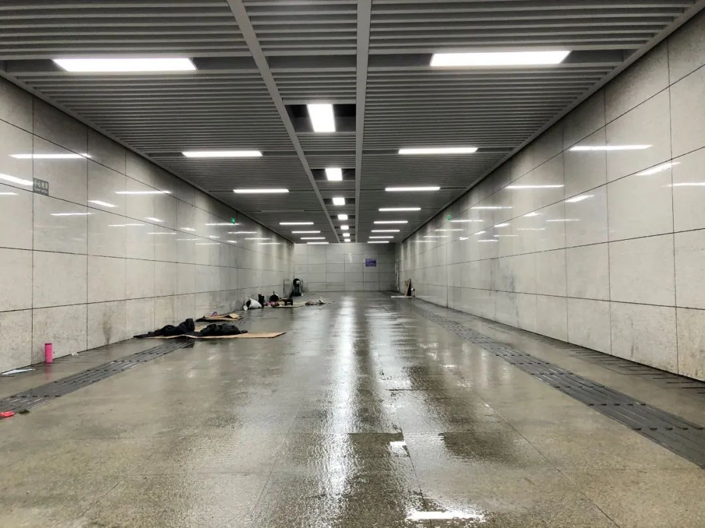
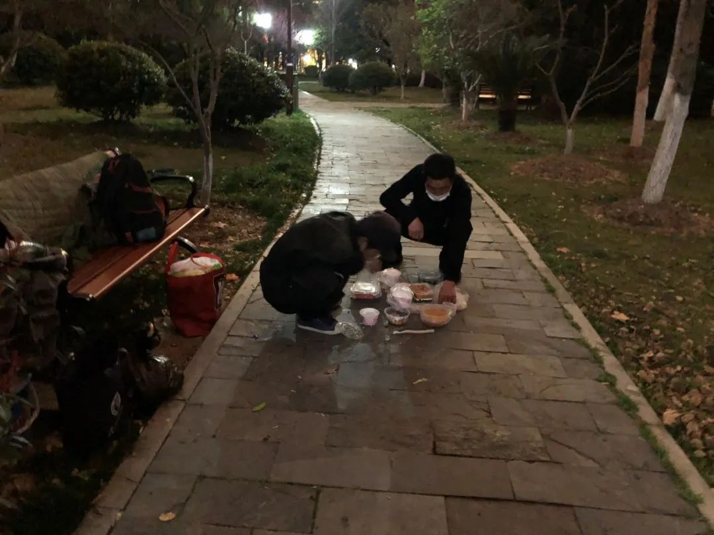
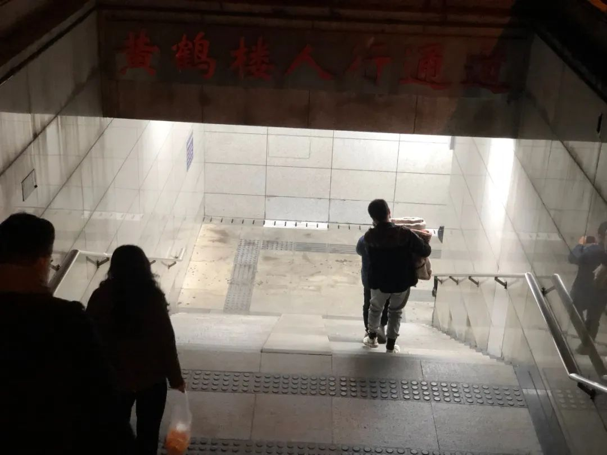
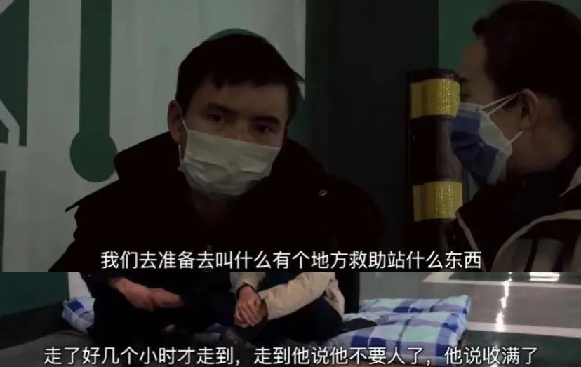

活着，在武汉
原文链接 备份链接 武汉，成为人们每天都在密切关注的地方。 大家所关心的，不仅仅是冰冷的统计数据，还有城市所蕴含的温度与力量。喧嚣和热闹褪去，日常的武汉浮现出另一种面貌。 这里的街道曾经热情洋溢，承载着数量庞大的居民，这里的过往辉煌而热 …


被冲水的通道和他们的行李，拍摄时间在2月24日下午7点左右（图/南风窗记者 向治霖）
接连四天，预测天气的软件显示，武汉将有持久的阴雨。然而，眼前的雨还没下时，高强住的地方就湿透了。
他住在武昌区一个地下通道。2月24日下午2点多，通道里来了十多个人，他们接上水管，冲洗了整个地面。
差不多一小时后，冲水的人走了，高强下去“抢救”他的行李。
他的行李全湿了，包括铺地上的床单、被子，还有在两天前，“红十字会送的棉大衣”。他舍不得棉大衣，拿出来晒在出入口的铁杆上。
通道里住了7个人，他们滞留在武汉，又交不起钱住旅馆。
冲水的时候，眼看着被盖衣物要被淋湿，但他们不敢上前，因为“来的人穿着执法人员的制服”。
高强说：“现在是特殊时期，我们都能理解，但是我们这群人，哪怕在通道里住着，也比没有地方住在外乱跑要强啊”。

滞留武汉
高强在通道住了10天左右，他是来武汉务工的，在工地上做些零活。工地放假后，宿舍也清空了，但他不想回家。
做了一年，没挣到钱，他只想早点开工。
没想到，1月23日武汉“封城”。“这下真回不去了”，高强苦笑说。
他先是住在小旅馆，一天收费30元，但是饭菜越来越贵，“每天最少用掉100块”。他很快就住不起了。
他想了两个办法，一是退了房，露宿街头，省下的一天房费，能多换一些泡面。二是找工作，他猜想，现在的武汉，肯定缺少劳动力。他从汉口开始走，一路见到社区就闯，问人需不需要临时工？在路上看见环卫工，他也会问有没有工作机会？
“没有。”
“不需要。”
他不知道怎么来到地下通道的。高强说，他只记得腿走肿了，因为躺在冰冷的地上，他的腰快直不起来，但还是撑着继续走。到了通道，别人看他可怜，给了他一张床垫。
他就这么住了下来。
黄鹤楼景区的照明依然充足，灯光包围的古式建筑群，在日暮淡薄时分外好看，只是不见一个游客。2月24日下午6点多，我到了通道下面，冲水过后3个小时，水依然在地上流淌，水管被丢在了阶梯上。通道就在黄鹤楼公园的西门边，马路对面是辛亥革命武昌首义纪念馆。
通道是住不了了，他们只好在公园附近的小树林游荡。
方建“救”回了一个桶和一个包，那是他吃饭的东西，或者说“要饭”的工具。他是一个职业乞丐，从1998年开始乞讨。他是安徽阜阳人，今年37岁。
他右边的袖管空空荡荡，是在15岁那年，做手术截肢了的。医生说是里骨头坏死，“现在肯定能治了，但那个时候没有条件，也没有钱去治”，他说。
冲水的时候，方建在公园里游荡，不时凑上去看一眼，“他们那些人，接了水龙头，就对着被子冲”。
他的家当全在下面，但他不敢阻止，他说：“他们这群人，对我们做事，从来不讲理由。说实在的，我们都是下等人”。

湿透的行李（图/南风窗记者 向治霖）
另一个滞留者盛宽，和方建是安徽老乡。他也在武汉做临工生活，“封城”后无处可去。
老谭在这群人中年纪大些，经历也更曲折，他是在汕头打工，春节前要回到老家襄阳，但在经过武汉时被困住了。
老谭早先把钱都寄回了家，只按正常预计留下了一点盘缠，这下完全不够了。他给家人报平安时，家人说要给他打钱，但他拒绝了，“本来就没几个钱，自己能撑就撑过去”。
高强说，家里还不知道他在“流浪”，老家里有个70多岁的老母亲，幸好有亲哥哥照顾，但她知道了一定会担心。高强不忍对家里说。
可是，钱已经用完了。高强还问前工友借了200块，没过几天又花光了。他每天盼着武汉“解封”的消息，但在各种传闻中，日子一天天往后拖。
“再来一个月，我就真的撑不住了”，他说。
高强、方建和我交流时，老谭和盛宽拿着最后的泡面，去找医院接开水来泡，但在附近的医院，围起了路障，禁止他们进入。他们来回走了一个多小时，才在一家儿童医院接到开水。

高强和方建，则一包泡面也没有，饿了一整天了。
高强说，有个人开始在垃圾桶里找吃的，但是现在，只有医院的垃圾桶还有食物，“他捡了一份盒饭，别人只吃了一两口。我看菜色还不错”，高强说，但他不敢吃，因为害怕有病毒。
在垃圾桶找吃的这个人很年轻，今年27岁。他也在公园里，一个人远远坐在条凳上，他说自己去年9月来了武汉，一直没有工作，别的事他不愿意多说。
其实，他们很警惕外来的人。在我叫的5人份外卖送达时，老谭和盛宽却迟迟不来。我和方建转了一圈，在马路边找到他们，招呼他们趁热吃饭。但他们连连拒绝，说是吃过了。
盛宽吞吞吐吐讲出了原因，他担心又被拍照。他们遇见过几波人了，有的给他们留下点东西，立刻就狂拍照片，“我一个大男人，有手有脚正常工作，只是遇到困难时期，就给我们曝光出去，太丢人了”。
确定不拍照片后，他们才放心，把饭菜端起来吃。
高强对我说：“要不是碰上病毒，我们也不会住在通道，现在还被人追着撵了出来。我们也想早点开工，正常上班、赚钱吃饭，这不是没有办法了吗？”

救 援
住的地方没有了，高强担心真的下雨，他们会更加困难。
吃的东西也快没了，有钱也买不到。管理严格，小商店大多没开，超市又不对个人开放。他们现在有的食物，还是前几天趁早买的，以及部分公益人士的赠予。
高强记得，前后大概来了3拨人。
“第二拨人是2月21日来的，自称是红十字会的人，他们给的东西最多”，高强说，来的人给了他们一人7个口罩，嘱咐说每天都要戴着，还给他们发了垫子、被子，以及棉大衣——就是在3天后被淋湿的那些。每人还得了10桶左右的泡面。
第三拨人是民间志愿者，来的那天是2月23日，给了他们每人两盒盒饭。高强吃了一盒，留着另一盒第二天吃。

为了节省开销，他们习惯了每天吃一顿，还都是在晚上吃。方建说，过道里不许生火，他们只好在晚上悄悄做，下面条。白天就在公园里走走，晒一天太阳。
每天早上八九点有固定的人员会来给他们量体温、发口罩。但他们说，这批人只是做做样子，来了就给最近的人量体温，旁边的人就拍照。泡面也只给一桶，给的时候又拍照，“表明做了工作，剩下的人就不管了”，方建说。
他们怀疑，对通道冲水的人，也是他们叫来的。
究竟是谁？对他们来说不重要，他们最大的问题，是解决眼下的困难。
事情很快有了变化。
2月24日晚上10点，他们被人冲了水的消息，在一个志愿者群中传开。有人立刻组织起救援小队，在凌晨时分，六七人带着新的被子床单，赶到了黄鹤楼公园附近。
然而，公园里一个人也没有。根据线索，志愿者在另一个通道找到了人，是方建和盛宽两位老乡。他们得了被子，有位独立纪录片导演提了一大袋零食，坚持让他们收下了。

2月24日晚，志愿者给流浪人员送被子（图/南风窗记者 向治霖）
下午才抱怨过拍照的盛宽，这次没有拒绝镜头，“我这个人分得清好坏，你们一片好心，我就无所谓了”，他解释道。
纪录片导演是个年轻女孩，她盘腿坐在过道，和他们面对着面。她准备了自己的床单，和他们一起，在通道里过了一夜。盛宽终于打开了话匣子，笑着讲述他的故事。沉默的时候，导演的一位男性同伴突然唱歌：“把我的悲伤留给自己，你的美丽让你带走。”盛宽很是捧场，拍手连叫“好，好”。
遗憾的是，高强、老谭等5人，始终没有找到。天黑以后，他们就收拾东西，各自找各自的“床”，没人知道在哪儿。
幸好，在这一晚，依然没有真的下雨。

一个安稳觉
第二天，2月25日下午，我在黄鹤楼公园找到了高强。他昨晚在桥下睡了一夜，还好天气暖和，他的外套勉强够用。后半夜时，路上的响动吵醒了他，他就去了一趟江边，把棉大衣重新洗了，预备晾干了穿。
“可惜呀！”他直叹气摇头，中午的时候他摸了下衣服，感觉快干了，就在桥下补了个觉。但睡醒起来，棉大衣不知被谁收走了。
他又是一天没吃饭，回到了公园闲逛，其他几个人也回来了。志愿者获得消息后，立刻开始找被子，把昨晚漏掉的4个人补上。
在这一天，官方发布了新政策，“对因离鄂通道管控滞留在湖北、生活存在困难的外地人员，由当地政府及有关方面提供救助服务”。也就是说，他们可以获得官方的救助。

只不过，政策暂时还没落实。方建说，他遇到过一次管理人员，但不是问他要不要救助，而是提醒他这里不能住，叫他走开。
就算政府给他安排地方住，他也不想去，作为职业乞丐，他很排斥接受救济，因为在2004年时，他在浙江被收容过。“关了我几天，吃吃不好，住住不好，还让我交了300块钱。”
老谭也遇到了管理人员，他回公园的路上，有3个穿制服的人叫住他，对他说现在有了收留场地，问他愿不愿意去。老谭回答说：“不用了”，赶紧离开了他们。他告诉我，他主要是担心收费问题，其次害怕去了被感染。
他们还是愿意在公园，可以散步、晒太阳，同时远离人群。只是住处不好找，早上10点左右，通道被人用铁栏围起了出入口，里面的东西都清空了。

这天下午，公园里又有新成员。他背着大包，提着一个袋子，穿得整齐干净，他是刚用完了钱，不能继续住酒店了，所以到公园里来。他从浙江过来，别的事也不愿意多说。
下午5点左右，我叫了一单7人份的外卖，过一个小时才送达，他们很快吃光了。然而，重新找的被子，需要志愿者一处一处拿。天黑了，气温明显下降。
晚上8点28分，志愿者魏哥到了公园，把被子给了他们。高强等人连连感谢，但他们的时间不多了，要赶紧找今晚的住处。没过一会儿，一群人就散了。
在公园附近的路口，我又遇见了那个翻垃圾箱的小伙，他带着全部行李，看起来非常疲惫。他说，他找了两个地方住，但都被人叫起来，把他撵走了。他不愿意再说话，朝着长江大桥的方向走去，路口一转不见了。
晚上9点过，高强终于找到了一个新的过道，他准备下去看看。其实，盛宽和方建就睡在这里，因为这个过道很偏，暂时没有被注意到。高强有些高兴，他说：“今晚能睡一个安稳觉了”。

2月25日晚，高强找到了新的通道（图/南风窗记者 向治霖）
他下去后十多分钟，一个穿保安服的人来了，往地道里看了一眼，抽身走了上来。他对我抱怨说：“这群人叫也叫不走，又住到这儿了。现在明明有政府收留，包吃包住，他们还不愿意去。”
他是对面广场的工作人员，据他说，红十字会捐的物资，是他上报后送来的，前两天冲洗通道，也是因为他的上报反映。“没有办法，他们不愿意走，但过道不能住人，这是规定”，他说，这个通道还是不能住，等他明天再报上去。
（部分人物为化名）
作者 | 南风窗高级记者 向治霖
编辑 | 李少威
排版 | 阿丽菜
图片 | 部分来源于网络
南风窗新媒体出品


点击购买最新一期《南风窗》
点在看让理性的声音传得更遥远

原文链接 备份链接 武汉，成为人们每天都在密切关注的地方。 大家所关心的，不仅仅是冰冷的统计数据，还有城市所蕴含的温度与力量。喧嚣和热闹褪去，日常的武汉浮现出另一种面貌。 这里的街道曾经热情洋溢，承载着数量庞大的居民，这里的过往辉煌而热 …
原文链接 备份链接 今天是武汉封城的第六天，昨天给大家介绍了武汉人爱吃什么，今天就给大家介绍一下，武汉我自己最心爱的几处风景。 黄鹤楼自然不用说了，五A级景区，游客如织。但我还是最喜欢晴川阁。晴川阁在汉阳，晴川历历汉阳树，芳草萋萋鹦鹉洲。 …
原文链接 备份链接 她会因为想家哭鼻子，也会因为喝到可乐而幸福感爆棚。她自愿报名到武汉一线为患者服务，我又钦佩她的坚强和勇敢。 文 | 吴美芬 小葵是从北京到武汉支援的一名护士，今年24岁。2月7日她到达武汉，至今已经有20天。2月19 …
原文链接 备份链接 这些天，全国各地涌现出一批励志感人的原创公益歌曲，人们用音乐的力量鼓舞士气，为武汉、为中国加油！ 一 子时，推开窗，冷冷的风、冷冷的雨，天气预报说晚上有雪。已是春寒料峭了，我关上窗，继续收集歌曲。这些天，全国各地涌现出 …
原文链接 备份链接 金才玉（中）等护工前往街道求助，希望安排收治。 本文约3393字 预计阅读时间9分钟 作者 | 中青报·中青网记者 王林 编辑 | 张国 武汉1月23日宣布封城之后，900万人留守，正在武汉市中心医院照顾病人的6位护 …